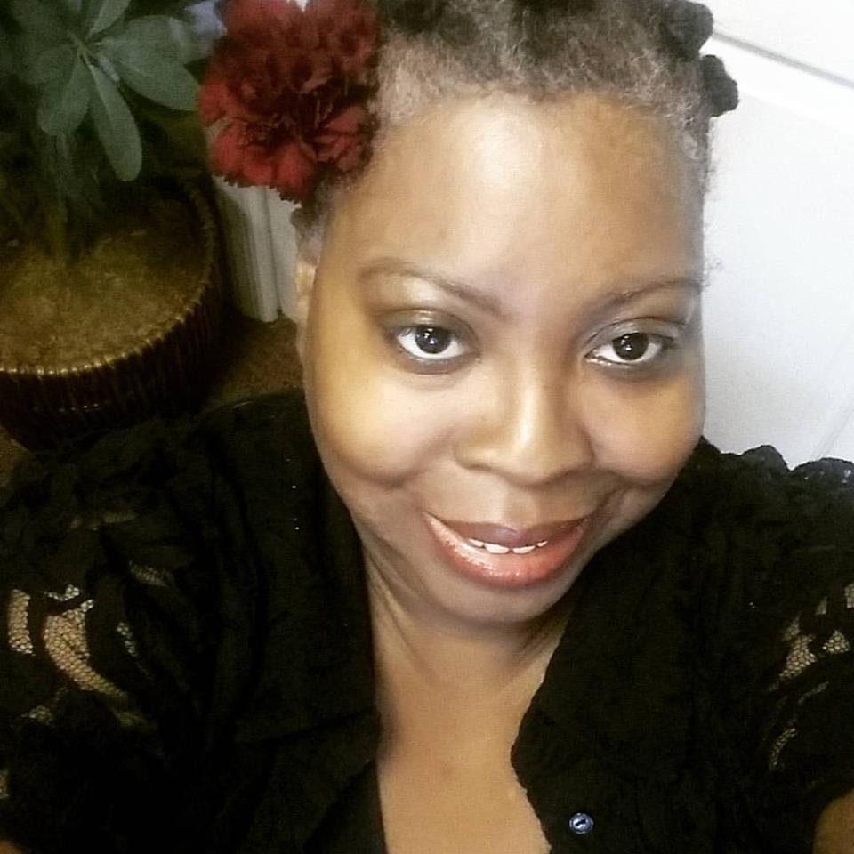

Home
About Me
Contact Me

I was born in Philadelphia, but grew up in the Atlanta, Georgia area. I returned to Philadelphia in 1999 and except for a six month period where I returned to Atlanta, I've been here ever since. Interesting fact: I am an identical twin. I'm older than my sister, Sharon, by seven minutes.
I have a few hobbies, but my main passion is baking. I attended the Art Institute of Philadelphia's baking and pastry program in 2004. Baking is one of the few things I would do for free. My favorite things to bake are cookies. My drunken oatmeal raisin cookies are popular with friends and family. Interesting fact: I used to have a cookie company with my sister called Sheila and Sharon's Cookies. We didn't make a lot of money, but it was an interesting experience.
I'm the proud fur parent of two adorable cats: Shelby and Jean-Ralphio (Ralphie). Ralphie is a recent addition to our family. He was abandoned in my apartment building's vestibule a week before Christmas.